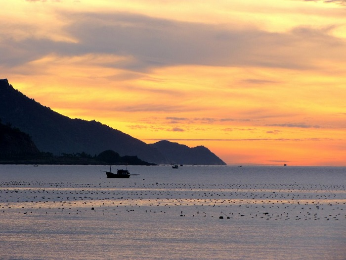
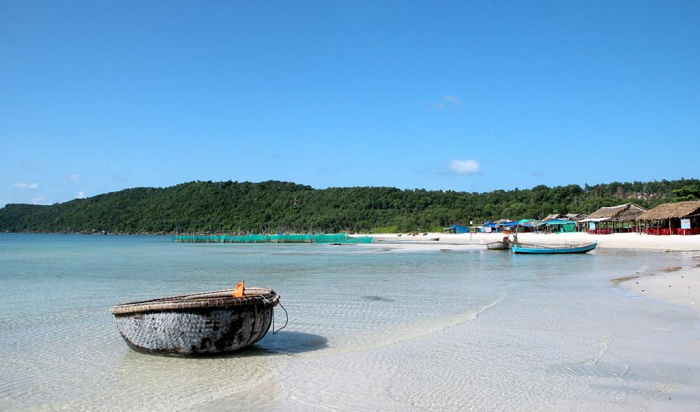

Hòn Hèo - điểm đến hấp dẫn thường xuyên được nhắc đến khi du lịch Nha Trang, nơi vẫn còn giữ nguyên nét hoang sơ của cảnh quan rừng núi và vẻ đẹp đầy thơ mộng của những eo biển cát trắng nắng vàng.
Hòn Hèo Nha Trang còn có tên gọi là Phước Hà Sơn, một bán đảo hoang sơ với cảnh quan tự nhiên đẹp mắt và bãi tắm lớn thơ mộng, được nhiều du khách trong và ngoài nước biết đến.
Cách Nha Trang tầm 50km, phía nam đầm Nha Phu, bán đảo Hòn Hèo thuộc xã Ninh Hòa, tỉnh Khánh Hòa là điểm đến lý tưởng của những đôi chân yêu vẻ đẹp thơ mộng của biển cả.
Theo lời người dân kể lại, tên gọi Hòn Hèo đã xuất hiện từ rất lâu. Sở dĩ cái tên này ra đời là do trước đây hoạt động khai thác và kinh doanh gỗ trên đỉnh Phước Hà Sơn, đặc biệt là chế tác gỗ mây thành gậy chống (hay còn gọi là cây hèo) rất nổi tiếng.
Tương truyền, đỉnh Phước Hà Sơn khi ấy có rất nhiều gỗ quý, đặc biệt là gỗ mây. Gỗ mây trên núi này dài và to, dẻo dai, chắc chắn vô cùng. Chính vì vậy, rất nhiều thương lái, thợ thầy đến đảo khai thác gỗ mây về làm rương tủ, giường kệ… Một vài nghệ nhân bắt đầu chế tác gỗ này thành gậy chống (còn gọi là cây hèo). Về sau, gậy chống (cây hèo) từ gỗ Phước Hà Sơn ngày càng nổi tiếng bởi chất lượng và giá trị sử dụng. Lâu dần người ta đổi tên Phước Hà Sơn thành Hòn Hèo cho dễ nhớ lại tiện đọc.
Núi Hòn Hèo Ninh Hòa là ngọn núi cao nhất trong dãy 10 ngọn núi bao bọc quanh vịnh Nha Phu và Vân Phong. Dãy núi hùng vĩ tựa như một bức tường thành vững chãi, bảo vệ và che chắn, giữ bình yên cho ngư dân nơi này.